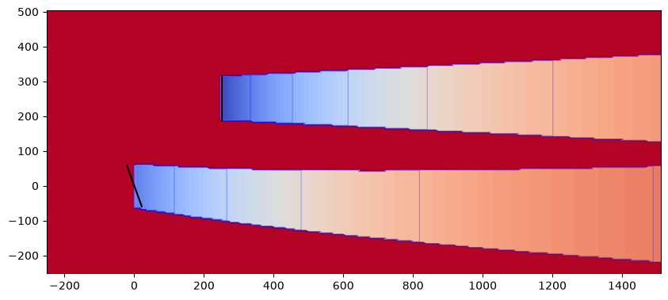
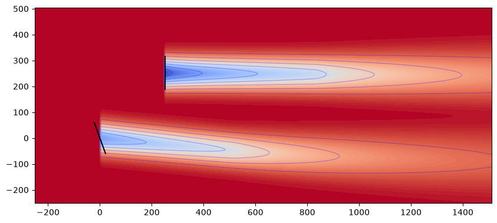
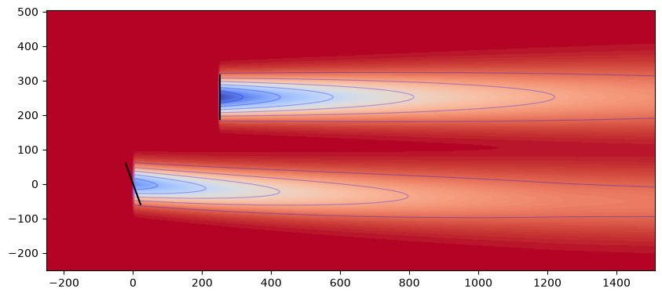
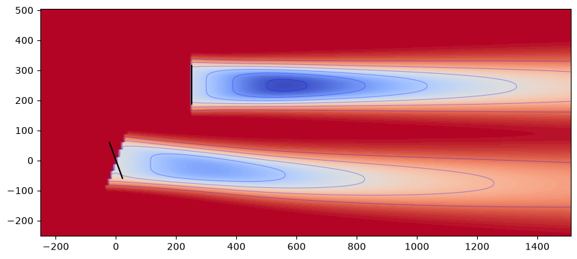
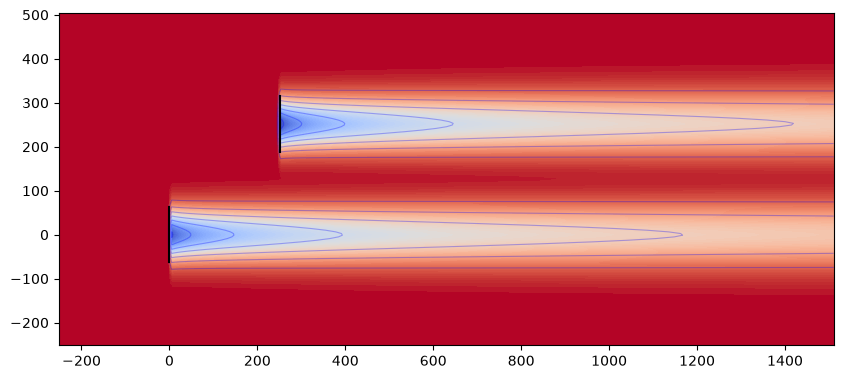
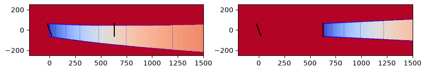
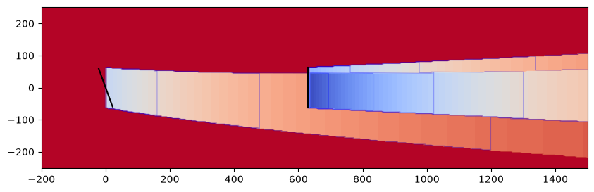
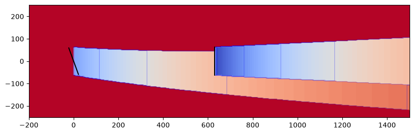

Wake Models#
A wake model in FLORIS is made up of four components that together constitute a wake. At minimum, the velocity deficit profile behind a wind turbine is required. For most models, an additional wake deflection model is included to model the effect of yaw misalignment. Turbulence models are also available to couple with the deficit and deflection components. Finally, methods for combining wakes with the rest of the flow field are available.
Computationally, the solver algorithm and grid-type supported by each wake model can also be considered as part of the model itself. As shown in the diagram below, the mathematical formulations can be considered as the main components of the model. These are typically associated directly to each other and in some cases they are bundled together into a single mathematical formulation. The solver algorithm and grid type are associated to the math formulation, but they are typically more generic.
flowchart LR
A["Deficit"]
B["Deflection"]
C["Turbulence"]
D["Velocity"]
E["Solver"]
F["Grid"]
subgraph H[FLORIS Wake Model]
direction LR
subgraph G[Math Model]
direction LR
A---B
B---C
C---D
end
G---E
E---F
end
The models in FLORIS are typically developed as a combination of velocity deficit and wake deflection models, and some also have custom turbulence and combination models. The descriptions below use the typical combinations except where indicated. The specific settings can be seen in the corresponding input files found in the source code dropdowns.
import numpy as np
import matplotlib.pyplot as plt
from floris import FlorisModel
import floris.flow_visualization as flowviz
import floris.layout_visualization as layoutviz
NREL5MW_D = 126.0
def model_plot(inputfile, include_wake_deflection=True):
fig, axes = plt.subplots(1, 1, figsize=(10, 10))
yaw_angles = np.zeros((1, 2))
if include_wake_deflection:
yaw_angles[:,0] = 20.0
fmodel = FlorisModel(inputfile)
fmodel.set(
layout_x=np.array([0.0, 2*NREL5MW_D]),
layout_y=np.array([0.0, 2*NREL5MW_D]),
yaw_angles=yaw_angles,
)
horizontal_plane = fmodel.calculate_horizontal_plane(height=90.0)
flowviz.visualize_cut_plane(horizontal_plane, ax=axes, clevels=100)
layoutviz.plot_turbine_rotors(fmodel, ax=axes, yaw_angles=yaw_angles)
Jensen and Jimenez#
The Jensen model computes the wake velocity deficit based on the classic Jensen/Park model Jensen [9]. It is often refered to as a "top-hat" model because the spanwise velocity profile is constant across the wake and abruptly jumps to freestream outside of the wake boundary line. The slope of the wake boundary line, or wake expansion, is a user parameter.
The Jiménez wake deflection model is derived from Jiménez et al. [10].
model_plot("../examples/inputs/jensen.yaml")

Gauss and GCH#
The Gaussian velocity model is implemented based on Bastankhah and Porté-Agel [11] and Niayifar and Porté-Agel [12]. This model represents the velocity deficity as a gaussian distribution in the spanwise direction, and the gaussian profile is controlled by user parameters. There is a near wake zone and a far wake zone. Both maintain the gaussian profile in the spanwise direction, but they have different models for wake recovery.
The Gauss deflection model is a blend of the models described in Bastankhah and Porté-Agel [11] and King et al. [13] for calculating the deflection field in turbine wakes.
model_plot("../examples/inputs/gch.yaml")

Empirical Gaussian#
FLORIS's "empirical" model has the same Gaussian wake shape as other popular FLORIS models. However, the models that describe the wake width and deflection have been reorganized to provide simpler tuning and data fitting.
For more information, see Empirical Gaussian model
model_plot("../examples/inputs/emgauss.yaml")

Cumulative Curl#
The cumulative curl model is an implementation of the model described in Bay et al. [14], which itself is based on the cumulative model of Bastankhah et al. [15]
model_plot("../examples/inputs/cc.yaml")

TurbOPark#
The TurbOPark model is designed to model long wakes from large wind farm clusters. It was originally presented as a “top-hat” model in Nygaard et al. [16] and was updated in Pedersen et al. [17] to have a Gaussian profile. For the latter, Ørsted released the Matlab code with documentation, which allows the verification of the implementation in FLORIS.
The first implementation, the TurboparkVelocityDeficitModel, was released in FLORIS v3.1. The second implementation, the TurboparkgaussVelocityDeficitModel, was released in FLORIS v4.2 and shows a near-perfect match to the predictions of Ørsted’s Matlab implementation. As such, we will emphasize the use of the TurboparkgaussVelocityDeficitModel going forward, and suggest that new users use this model (by setting the velocity_model field of the FLORIS input file to turboparkgauss instead of the TurboparkVelocityDeficitModel (velocity_model: turbopark)) if they are interested in testing the TurbOPark model.
The TurboparkgaussVelocityDeficitModel implementation was contributed by Jasper Kreeft.
Note that the original top-hat TurbOPark model (Nygaard et al. [16]) is not available in FLORIS.
The wakes as predicted by the TurboparkgaussVelocityDeficit model are demonstrated below.
model_plot("../examples/inputs/turboparkgauss_cubature.yaml", include_wake_deflection=False)

Turbulence Models#
Crespo-Hernandez#
CrespoHernandez is a wake-turbulence model that is used to compute additional variability introduced to the flow field by operation of a wind turbine. Implementation of the model follows the original formulation and limitations outlined in Crespo and Hernández [18].
The default parameter values used in FLORIS for CrespoHernandez differ from those reported in Crespo and Hernández [18] following subsequent calibration. However, Zehtabiyan-Rezaie and Abkar [19] argue that the sign of certain parameters are not physically consistent (and also misreported in subsequent literature). See the CrespoHernandez class docstring for more details.
Wake Combination Models#
The wakes throughout the flow field need to be combined in a careful manner in order to accurately capture their coupled effects. A simple model is to simple add them, but this can result in negative velocities a few turbines into the farm. More careful methods are available within FLORIS and shown here.
Each model is described below and its effects are plotted with two turbines in a line. These descriptions use the Jensen and Jimenez models since they highlight the differences in the combination models themselves. The upper plots show the turbine wakes individually to give a reference for the uncombined wake. The lower plots show both turbines along with their wakes combined with the chosen model.
def combination_plot(method: str):
X_UPSTREAM = 0.0
X_DOWNSTREAM = 5 * 126.0
X0_BOUND = -200
X1_BOUND = 1500
# Set the combination method
fmodel = FlorisModel("../examples/inputs/jensen.yaml")
settings = fmodel.core.as_dict()
settings["wake"]["model_strings"]["combination_model"] = method
fmodel = FlorisModel(settings)
# Plot two turbines individually
fig, axes = plt.subplots(1, 2, figsize=(10, 10))
fmodel.set(
layout_x=np.array([X_UPSTREAM]),
layout_y=np.zeros(1),
yaw_angles=np.array([[20.0]]),
)
horizontal_plane = fmodel.calculate_horizontal_plane(
height=90.0,
x_bounds=(X0_BOUND, X1_BOUND),
)
layoutviz.plot_turbine_rotors(fmodel, ax=axes[0])
flowviz.visualize_cut_plane(horizontal_plane, ax=axes[0], clevels=100)
layoutviz.plot_turbine_rotors(fmodel, ax=axes[1])
fmodel.set(
layout_x=np.array([X_DOWNSTREAM]),
layout_y=np.zeros(1),
yaw_angles=np.array([[0.0]]),
)
horizontal_plane = fmodel.calculate_horizontal_plane(
height=90.0,
x_bounds=(X0_BOUND, X1_BOUND),
)
flowviz.visualize_cut_plane(horizontal_plane, ax=axes[1], clevels=100)
layoutviz.plot_turbine_rotors(fmodel, ax=axes[0])
layoutviz.plot_turbine_rotors(fmodel, ax=axes[1])
# Plot the combination of turbines
fig, axes = plt.subplots(1, 1, figsize=(10, 10))
fmodel.set(
layout_x=np.array([X_UPSTREAM, X_DOWNSTREAM]),
layout_y=np.zeros(2),
yaw_angles=np.array([[20.0, 0.0]]),
)
horizontal_plane = fmodel.calculate_horizontal_plane(
height=90.0,
x_bounds=(X0_BOUND, X1_BOUND),
)
flowviz.visualize_cut_plane(horizontal_plane, ax=axes, clevels=100)
layoutviz.plot_turbine_rotors(fmodel, ax=axes)
Freestream Linear Superposition (FLS)#
FLS uses freestream linear superposition to apply the wake velocity deficits to the freestream flow field.
combination_plot("fls")


Max#
The MAX model incorporates the velocity deficits into the base flow field by selecting the maximum of the two for each point. For more information, refer to Gunn et al. [20].
combination_plot("max")

Sum of Squares Freestream Superposition (SOSFS)#
This model combines the wakes via a sum of squares of the new wake to add and the existing flow field. For more information, refer to :cite:katic_sos_1986.
combination_plot("sosfs")